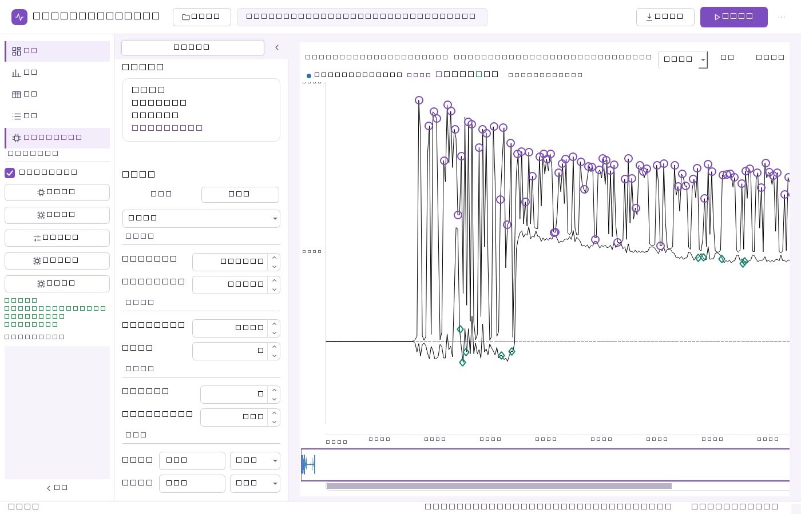
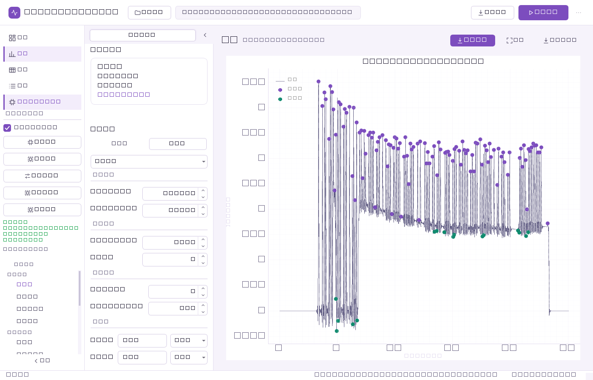
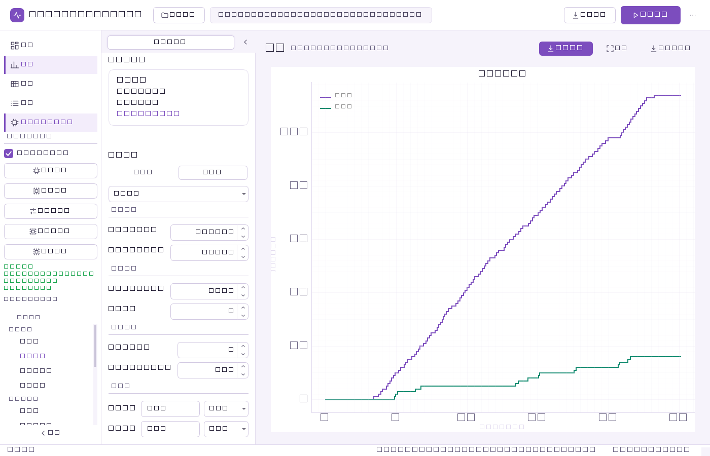
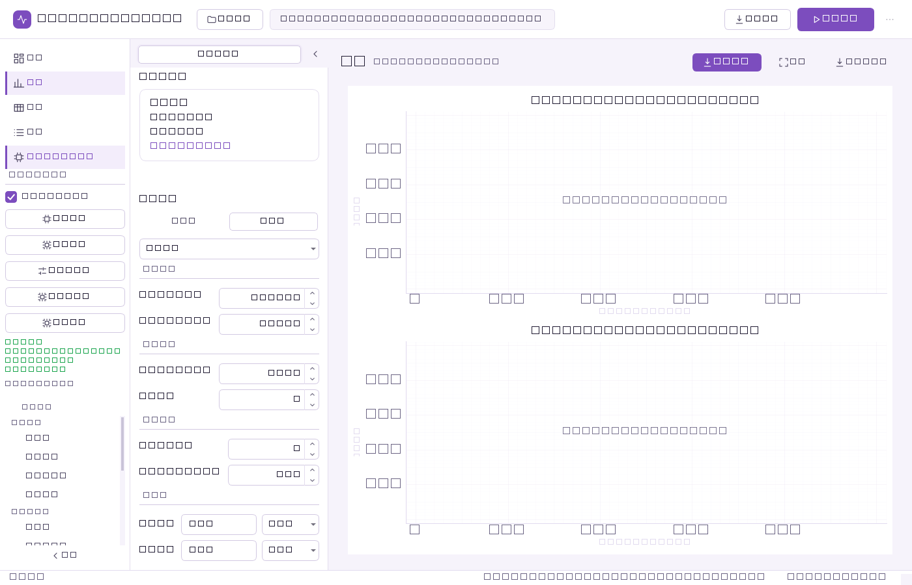
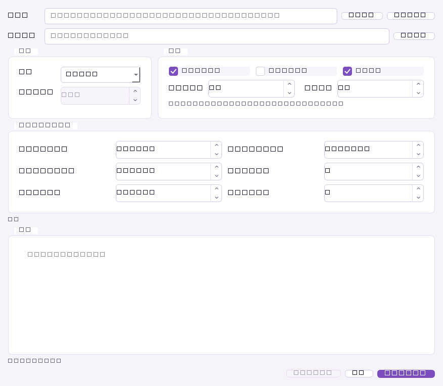
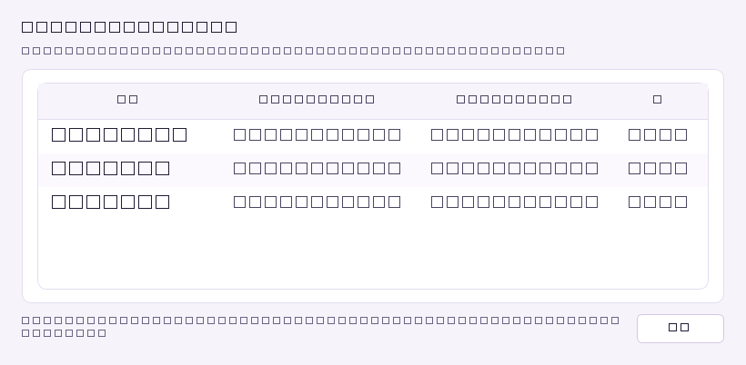
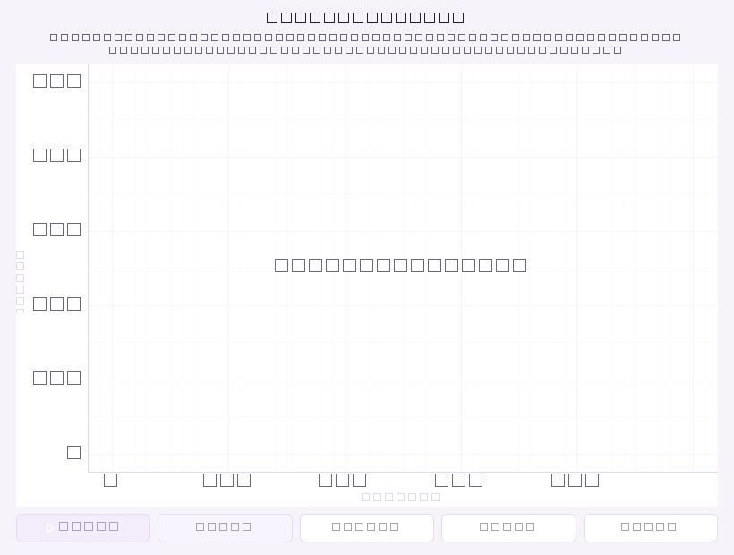

双瓶 / 单瓶分析
同一段记录按峰的正 / 负极性拆分为两个水瓶（B1 / B2），自动给出偏好率、偏好指数与换瓶统计；单瓶记录照常处理。
功能
同一段记录按峰的正 / 负极性拆分为两个水瓶（B1 / B2），自动给出偏好率、偏好指数与换瓶统计；单瓶记录照常处理。
经官方 ADInstruments SDK（adi-reader）流式读取多日、多通道、多 record 的 .adicht，恒定内存占用；按通道分配「饮水统计 / 辅助展示 / 忽略」。
Burst / Meal / 爆发内频率阈值全部可调；对舔舐间隔分布做 Weibull 拟合（Davis, 1998）与高斯混合，统计比较支持 Mann–Whitney U 与 Kruskal–Wallis + Dunn 事后。
波形手动标注后一键重训模型，ONNX 推理过滤伪峰，文件损坏自动回退 .pkl 检查点；模型可与软件分离、独立推送更新。
时间序列、分布与热图、爆发与关系三组共 14 类图表内嵌窗口显示；导出「概览 / 指标 / 每分钟统计 / 偏好」四张工作表的多 Sheet 工作簿。
文件夹级批量分析带逐文件进度与 ETA；命令行提供 analyze / batch / compare；MCP 服务器向 agent 暴露 10 个分析工具——三种接口共用同一分析服务，结果一致。
界面预览
应用为中文界面。以下截图取自 PySide6 主窗口、内嵌图表工作区与各功能对话框。







使用流程
点击顶部「打开数据」或按 Ctrl+O，支持 .txt / .csv / .xlsx / .adicht，自动嗅探分隔符。
选择 LabChart 文件后，在通道角色表中把每个通道设为「饮水统计 / 辅助展示 / 忽略」，右下角预览波形。
点击「一键分析」或按 Ctrl+R，状态栏显示进度；完成后呈现 KPI、交互式波形与累积曲线。
切换到「图表」工作区，在时间序列 / 分布与热图 / 爆发与关系三组中选择 14 类图表。
「数据导出」→「导出 Excel（分析数据）」，得到多工作表结果，可直接用于统计与论文作图。
软件更新
软件启动后自动比对最新版本；也可在右上角「⋯」→「检查更新…」随时手动触发。
发现新版本后点击「立即下载」；下载完成自动校验 SHA-256，校验通过才继续安装。
校验通过后静默覆盖安装并自动重启；用户数据保存在 %APPDATA%\LickometerPro，升级不受影响。
舔舐识别模型可与软件本体分离推送，更新模型无需重装软件。
更新数据源（清单）： update/manifest.json https://raw.githubusercontent.com/BuTrue/Lickometer-Pro/main/update/manifest.json
下载
安装包为 Windows x64 安装向导（中文界面），当前用户级安装，无需管理员权限、不弹 UAC。
| 项目 | 最低 | 推荐 |
|---|---|---|
| 操作系统 | Windows 10 x64 | Windows 11 x64 |
| 内存 | 4 GB | 8 GB |
| 磁盘 | 1 GB 可用空间 | 2 GB |
| 显示 | 1280 × 720 | 1920 × 1080 |
文档
功能总览、安装、快速开始、CLI 与 MCP、常见问题
Features, installation, quick start, CLI & MCP, FAQ
機能、インストール、クイックスタート、CLI / MCP、FAQ
Fonctionnalités, installation, démarrage rapide, CLI & MCP, FAQ
系统要求、安装、升级与卸载、常见问题
版本变更记录与已知限制
本仓库为发布仓库：仅提供安装包、文档与更新清单，源码不公开。Weibull ILI 拟合方法参考 Davis, J. D. (1998), Appetite 31(3), 435–447（DOI: 10.1006/appe.1998.0167）。